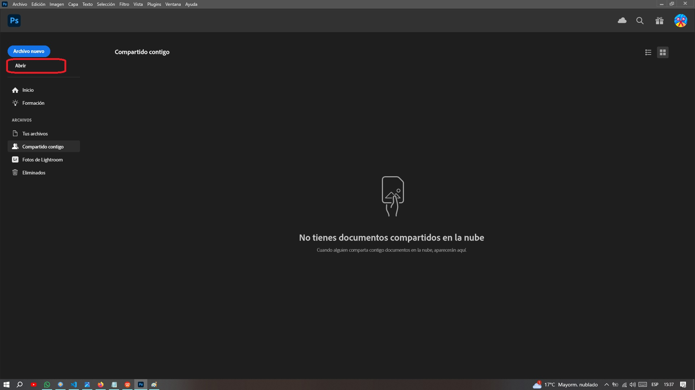
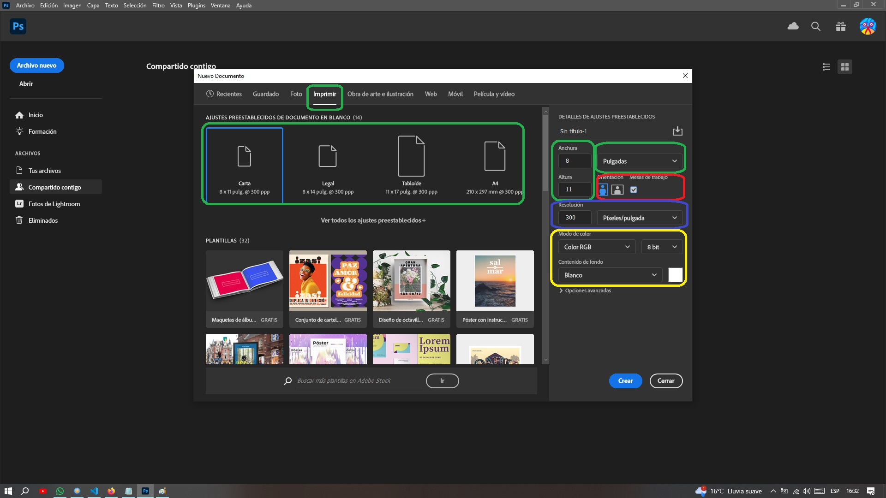

Comenzando un proyecto con Photoshop
Introducción
Comenzando un proyecto con Photoshop se refiere al proceso inicial de preparación y configuración para empezar a trabajar en un nuevo proyecto utilizando el software Adobe Photoshop. Esto incluye definir el tamaño y la resolución del lienzo, importar imágenes o elementos necesarios, aplicar ajustes iniciales como colores y estilos, y establecer las herramientas y paneles relevantes para el tipo de trabajo que se va a realizar. Es fundamental para asegurarse de que el proyecto comience de manera organizada y eficiente desde el principio.
Pantalla de Bienvenida
La pantalla de bienvenida en Adobe Photoshop es la primera interfaz que aparece al abrir el programa. Generalmente incluye opciones para crear nuevos documentos, abrir archivos recientes, acceder a tutoriales y recursos adicionales, y configurar preferencias iniciales. Es una herramienta útil para comenzar nuevos proyectos o continuar trabajos previos de manera rápida y organizada.
Adobe Photoshop ofrece en la pantalla de bienvenida las siguientes posibilidades:
- Las funciones representadas por el cuadro naranja permiten crear un nuevo archivo o abrir uno que ya exista.
- Las funciones dentro del cuadrado verde permiten regresar a la pantalla de inicio o acceder a la capacitación ofrecida por Adobe en Photoshop.
-
Las funciones encerradas en el cuadrado rojo entregan cuatro
opciones para el manejo de los archivos guardados en la
nube, espacio que ofrece Adobe gratuitamente:
- Tus archivos: Sirve como una central de almacenamiento y gestión de los documentos y proyectos.
- Compartido contigo: Permite a los usuarios acceder rápidamente a los archivos que han sido compartidos con ellos por otros usuarios. Esta funcionalidad facilita la colaboración y el trabajo en equipo al centralizar todos los documentos compartidos en un solo lugar dentro de la aplicación.
- Fotos de Lightroom: Permite a los usuarios acceder y editar fotos almacenadas en Adobe Lightroom directamente desde Photoshop. Esta integración facilita un flujo de trabajo eficiente entre ambas aplicaciones, permitiendo realizar ajustes avanzados en Photoshop después de organizar y realizar ediciones básicas en Lightroom
- Eliminados: Se refiere a los elementos que han sido borrados del espacio de trabajo o proyecto.
-
Las funciones contenidas dentro del cuadro amarillo
permiten:
- Guardado: Muestra los archivos almacenados en la nube.
- Buscar.
- Descubrir novedades: Se refiere a explorar y aprender sobre las nuevas características, herramientas o actualizaciones que han sido introducidas en la aplicación. Es una forma de estar al tanto de las últimas funciones disponibles para mejorar y ampliar tus habilidades en Photoshop
- Acceso a la cuenta del usuario.
Abrir Archivos desde el Computador
Para abrir un archivo se debe picar en el botón Abrir encerrado en el cuadro rojo en la siguiente imagen o con la siguiente secuencia de comandos de menú principal Archivo > Abrir... >.
Por defecto la siguiente ventana que se abrirá es la de Abrir desde Creative Cloud, es decir, el servicio de alojamiento en la nube que ofrece Adobe.
En este caso se usará como fuente de los archivos el mismo computador para ello picar en En tu Ordenador, se abrirá una ventana en donde se podrá buscar el archivo a editar.

Buscar el archivo, picar sobre él y en la ventana emergente picar por el momento en ok.
Crear Archivo Nuevo
Si en la pantalla de bienvenida se pica sobre el botón Archivo Nuevo, se abrirá por efecto la ventana con los archivos recientes, es decir, la ventana mostrará los últimos archivos que han sido procesados con Abobe Photoshop.
En esta ventana, hay varias pestañas con valores ya estandarizados para trabajos específicos. También se pueden descargar imágenes gratuitas desde cada pestaña, organizadas en diferentes categorías, en este caso se escogió la categoría de impresión.
En cualquier caso se podrá escoger desde varias opciones del tamaño del papel a utilizar, ver las opciones dentro del cuadro verde.
Dentro del cuadro naranja se podrá escoger la orientación de la página y si se trabajará o no con varias áreas de trabajo independientes.
También se puede escoger la resolución, cuadro azul.
Por último también se puede escoger el modo de color y color de fondo, cuadro amarillo.